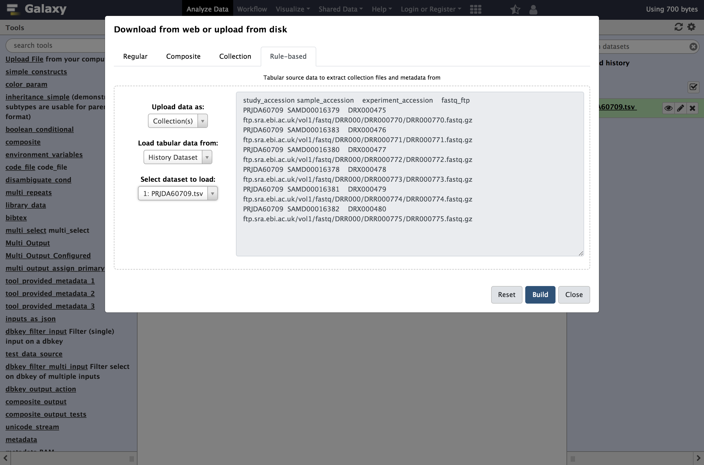
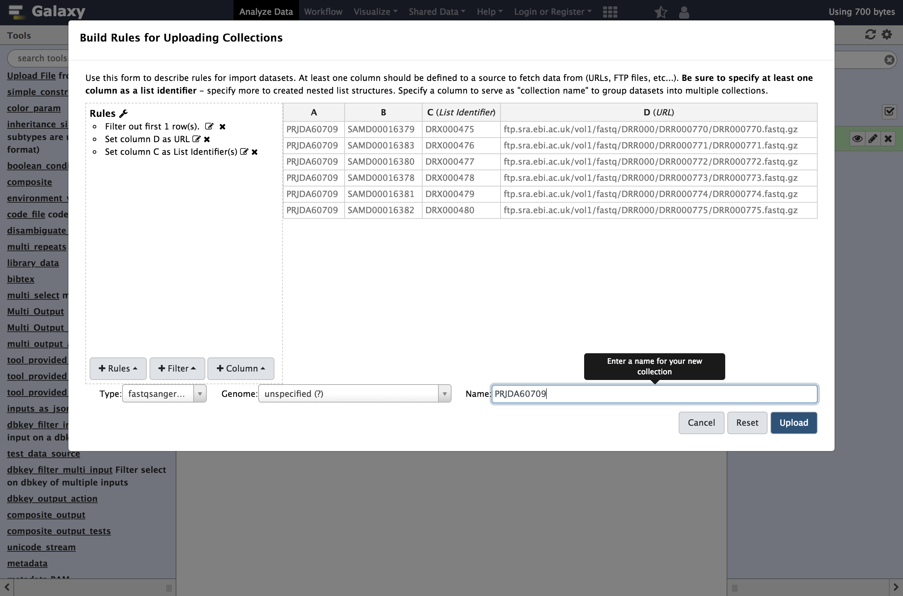
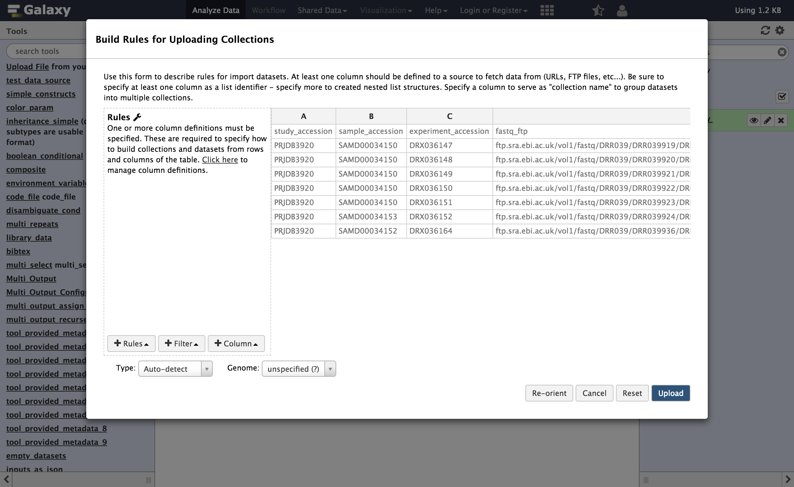
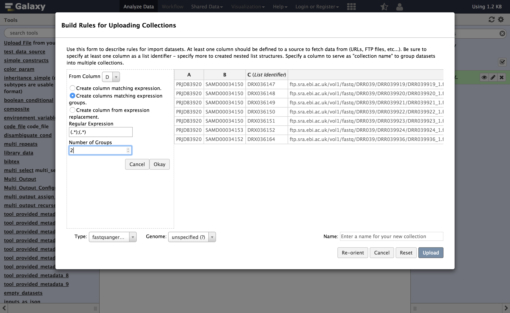
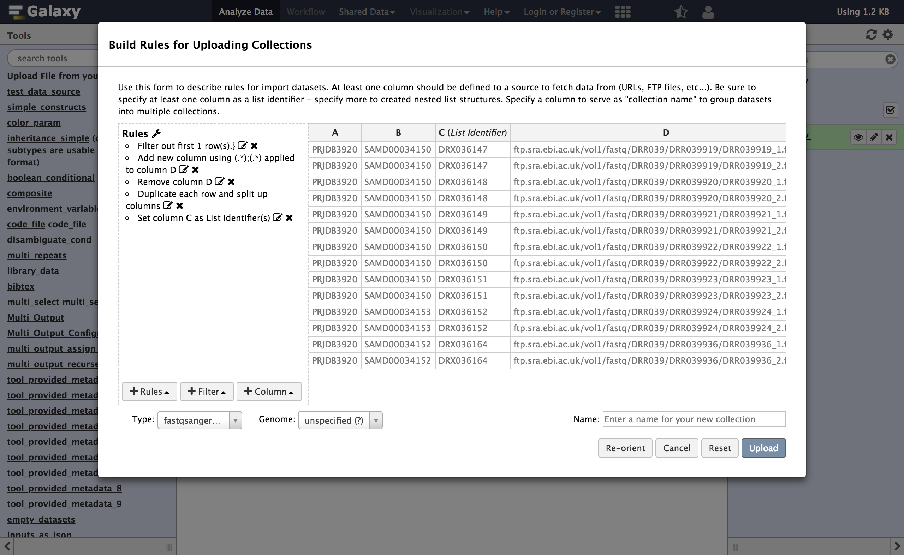

Rule Based Uploader
 John Chilton
John Chilton Helena Rasche
Helena RascheOverview
question Questionsobjectives Objectives
How to use the rule based uploader to create complex collections
requirements Requirements
Learn about the Rule Based Uploader
- User Interface and Data Manipulation
- Using dataset collections: tutorial hands-on
time Time estimation: 20 minutes
level Level: Intermediate level level level
last_modification Last modification: Jan 6, 2021
Introduction
Through a series of examples, this tutorial aims to familiarize the reader with building Galaxy collections from tabular data containing URLs, sample sheets, list of accessions or identifiers, etc..
comment Audience
This tutorial assumes a basic knowledge of using dataset collections in Galaxy but doesn’t assume any particular knowledge of biology or bioinformatics. If you have not used collections with Galaxy previously, please check out the using dataset collections tutorial.
Agenda
In this tutorial, we will:
Uploading Datasets with Rules
This approach could be used to manipulate lists of uploads coming from many different formats, but we will start with a tabular description of files for a study from the European Nucleotide Archive. We will be using the data from a study of 16s ribosomal RNA.
hands_on Hands-on: Downloading Data from ENA
To start, navigate to the above study and click the option to “Select columns”. Here we will narrow the set of columns we consider to just a few relevant to uploading these files to Galaxy.
Select only:
- Study accession
- Experiment accession
- FASTQ files (FTP)
- Sample accession
The table should look like:
Study accession Sample accession Experiment accession FASTQ files (FTP) PRJDA60709 SAMD00016379 DRX000475 File 1 PRJDA60709 SAMD00016383 DRX000476 File 1 PRJDA60709 SAMD00016380 DRX000477 File 1 PRJDA60709 SAMD00016378 DRX000478 File 1 PRJDA60709 SAMD00016381 DRX000479 File 1 PRJDA60709 SAMD00016382 DRX000480 File 1 Download the resulting tabular data describing the files by clicking the “TEXT” link at the top of the page. Alternatively, the resulting sample sheet can be downloaded directly here. The number and size of the files for this example are relatively small for sequencing data but larger files and larger numbers of files should work as well - Galaxy will just need more time to download and process the files.
Unfortunately the ENA ftp server is not operational at this moment, so we have to use a backup from zenodo. You can select all the data below and copy them to your clipboard.
study_accession sample_accession experiment_accession fastq_ftp
PRJDA60709 SAMD00016379 DRX000475 https://zenodo.org/api/files/c07c0fbd-c578-4c8c-989d-5181f8824773/DRR000770.fastqsanger.gz
PRJDA60709 SAMD00016383 DRX000476 https://zenodo.org/api/files/c07c0fbd-c578-4c8c-989d-5181f8824773/DRR000771.fastqsanger.gz
PRJDA60709 SAMD00016380 DRX000477 https://zenodo.org/api/files/c07c0fbd-c578-4c8c-989d-5181f8824773/DRR000772.fastqsanger.gz
PRJDA60709 SAMD00016378 DRX000478 https://zenodo.org/api/files/c07c0fbd-c578-4c8c-989d-5181f8824773/DRR000773.fastqsanger.gz
PRJDA60709 SAMD00016381 DRX000479 https://zenodo.org/api/files/c07c0fbd-c578-4c8c-989d-5181f8824773/DRR000774.fastqsanger.gz
PRJDA60709 SAMD00016382 DRX000480 https://zenodo.org/api/files/c07c0fbd-c578-4c8c-989d-5181f8824773/DRR000775.fastqsanger.gz
hands_on Hands-on: Accessing the Rule Based Uploader
Click the upload icon toward the top left corner.
By default the familiar simple upload dialog should appear. This dialog has more advanced options as different tabs across the top of this dialog though.
Click
Rule-basedas shown below.
As you can see in this dialog, data can be selected from a history dataset or pasted in directly. If Galaxy is configured to allow FTP uploads, the contents of your FTP directory may be loaded directly as well.
- Paste your tabular data right into the textbox on this page as shown below
- Click the
Buildbutton.study_accession sample_accession experiment_accession fastq_ftp PRJDA60709 SAMD00016379 DRX000475 https://zenodo.org/api/files/c07c0fbd-c578-4c8c-989d-5181f8824773/DRR000770.fastqsanger.gz PRJDA60709 SAMD00016383 DRX000476 https://zenodo.org/api/files/c07c0fbd-c578-4c8c-989d-5181f8824773/DRR000771.fastqsanger.gz PRJDA60709 SAMD00016380 DRX000477 https://zenodo.org/api/files/c07c0fbd-c578-4c8c-989d-5181f8824773/DRR000772.fastqsanger.gz PRJDA60709 SAMD00016378 DRX000478 https://zenodo.org/api/files/c07c0fbd-c578-4c8c-989d-5181f8824773/DRR000773.fastqsanger.gz PRJDA60709 SAMD00016381 DRX000479 https://zenodo.org/api/files/c07c0fbd-c578-4c8c-989d-5181f8824773/DRR000774.fastqsanger.gz PRJDA60709 SAMD00016382 DRX000480 https://zenodo.org/api/files/c07c0fbd-c578-4c8c-989d-5181f8824773/DRR000775.fastqsanger.gz
Examine the the
rules editorwhich now pops up.


At first glance, this may be feel like Excel or another spreadsheet program and you may feel the urge to start editing cells but we strongly encourage defining rules for manipulating the data instead. There are a few reasons for this:
- Manually modifying this metadata is not reproducible - we will not belabor the point here but check out Why not use excel for this? for more context. Building up rules for modifying this metadata will allow Galaxy to track and report your manipulations (providing tracibility) and apply them to new sets of files (providing reproducibility).
- Manually modifying this metadata is error prone - we believe defining rules and treating the metadata in a systematic way minimizes the possibility to manual errors. These errors can be very hard to detect for large sets of data.
- Manually modifying data is not scalable - this rule-based technique potentially scales to importing tens of thousands of datasets.
So rather than modifying the data, we will define rules for manipulating it and setting up “column definitions” that tell Galaxy how to use the metadata during upload or collection creation.
In order to get these files into Galaxy, we will want to do a few things:
- Strip that header out of the data (it doesn’t contain a URL Galaxy can download).
- Define column
Cas the dataset name. - Define column
Das the dataset URL (this is the location Galaxy can download the data from). - Tell Galaxy to treat these files as
fastqsanger.gzfiles.
hands_on Hands-on: Using Tabular Inputs to the Rule Builder
We will start by stripping that header out of the table. We call rules that strip rows out the table
Filter rulesin this dialog.
- From Filter menu select
First or Last N Rows
- “Filter which rows?”:
first- “Filter how many rows?”:
1- Click
ApplyNext we will define these columns for Galaxy.
- From Rules menu select
Add / Modify Column Definitions
- Click
Add Definitionbutton and selectName
- “Name”:
C- Repeat this again and select
URLinstead.
- “URL”:
D
Click
Apply, and you should see your new column definitions listed as in the following screenshot.You are now ready to start the upload
Click the
UploadbuttonAfter some time, the result in this case will be six datasets in your history. The next example will show to use the rule builder to create a collection.


Creating a Simple Dataset List
This example will demonstrate using such history datasets as the source for collection uploads - this can be handy when you’d like to apply existing Galaxy tabular manipulation tools to the metadata before processing for instance.
hands_on Hands-on: Creating a Simple Dataset List
tip Tip: Create a new history
Before we start uploading, it may be a good idea to create a new history for this example to keep things simple and match the following screenshots.
For our second example, we will use the same initial metadata, but instead uploaded as a file to Galaxy. This is a relatively common use case wherein you, through some filtering and querying in Galaxy, build a list of accession numbers or other sample identifiers, and then want to fetch the associated datasets to begin working with them.
comment Loading Metadata from a History Element
In addition to directly pasting data into the Rule Based Uploader, you can also load the metadata from a dataset in your Galaxy History, or from a file in your FTP directory if the admin has enabled FTP upload
Upload the metadata from the first example to your Galaxy, as a normal paste upload:
study_accession sample_accession experiment_accession fastq_ftp PRJDA60709 SAMD00016379 DRX000475 https://zenodo.org/api/files/c07c0fbd-c578-4c8c-989d-5181f8824773/DRR000770.fastqsanger.gz PRJDA60709 SAMD00016383 DRX000476 https://zenodo.org/api/files/c07c0fbd-c578-4c8c-989d-5181f8824773/DRR000771.fastqsanger.gz PRJDA60709 SAMD00016380 DRX000477 https://zenodo.org/api/files/c07c0fbd-c578-4c8c-989d-5181f8824773/DRR000772.fastqsanger.gz PRJDA60709 SAMD00016378 DRX000478 https://zenodo.org/api/files/c07c0fbd-c578-4c8c-989d-5181f8824773/DRR000773.fastqsanger.gz PRJDA60709 SAMD00016381 DRX000479 https://zenodo.org/api/files/c07c0fbd-c578-4c8c-989d-5181f8824773/DRR000774.fastqsanger.gz PRJDA60709 SAMD00016382 DRX000480 https://zenodo.org/api/files/c07c0fbd-c578-4c8c-989d-5181f8824773/DRR000775.fastqsanger.gz- Open the
Rule-basedupload tab again, but this time:
- “Upload data as”:
Collection(s)- “Load tabular data from”:
a History Dataset- “Select dataset to load”: the dataset you just uploaded

tip Tip: Don’t see your dataset?
If you don’t see your dataset, refresh your page and try again.
- Click
Buildto bring up the rule builder.- Repeat the steps from last time, except define column
Cas aList Identifierinstead of Name:
- From Filter menu select
First or Last N Rows
- “Filter which rows?”:
first- “Filter how many rows?”:
1- From Rules menu, select
Add / Modify Column Definitions
Add Definition,URL, Select ColumnDAdd Definition,List Identifier(s), ColumnC- “Type”:
fastqsanger.gz
Rather than assigning column
CasName, in this example we assigned it as aList Identifier. This is the description of the element in the resulting dataset collection. This identifier is preserved in mapped outputs as you map tools over collections and is useful for tracking sample names, replicate numbers, conditions, etc..- Enter a name for our collection, for example the ENA study identifier as shown below,
PRJDA60709. Click
UploadThis time a single new entry will appear in your history panel corresponding to all the files gathered together in a simple list named PRJDA60709.


Creating a List of Dataset Pairs
For this next example we will again use ENA data, this time corresponding to the study PRJDB3920 instead.
hands_on Hands-on: Creating a List of Dataset Pairs
Open the Rule Builder
- Open the
Rule-basedupload tab again, but this time:
- “Upload data as”: Collection(s)
- “Load tabular data from”: a
Pasted TablePaste the following table
study_accession sample_accession experiment_accession fastq_ftp PRJDB3920 SAMD00034150 DRX036147 https://zenodo.org/api/files/0c8d6a74-23dd-4d36-a32d-950eb038dacc/DRX036147_1.fastq.gz;https://zenodo.org/api/files/0c8d6a74-23dd-4d36-a32d-950eb038dacc/DRX036147_2.fastq.gz PRJDB3920 SAMD00034150 DRX036148 https://zenodo.org/api/files/0c8d6a74-23dd-4d36-a32d-950eb038dacc/DRX036148_1.fastq.gz;https://zenodo.org/api/files/0c8d6a74-23dd-4d36-a32d-950eb038dacc/DRX036148_2.fastq.gz PRJDB3920 SAMD00034150 DRX036149 https://zenodo.org/api/files/0c8d6a74-23dd-4d36-a32d-950eb038dacc/DRX036149_1.fastq.gz;https://zenodo.org/api/files/0c8d6a74-23dd-4d36-a32d-950eb038dacc/DRX036149_2.fastq.gz PRJDB3920 SAMD00034150 DRX036150 https://zenodo.org/api/files/0c8d6a74-23dd-4d36-a32d-950eb038dacc/DRX036150_1.fastq.gz;https://zenodo.org/api/files/0c8d6a74-23dd-4d36-a32d-950eb038dacc/DRX036150_2.fastq.gz PRJDB3920 SAMD00034150 DRX036151 https://zenodo.org/api/files/0c8d6a74-23dd-4d36-a32d-950eb038dacc/DRX036151_1.fastq.gz;https://zenodo.org/api/files/0c8d6a74-23dd-4d36-a32d-950eb038dacc/DRX036151_2.fastq.gz PRJDB3920 SAMD00034153 DRX036152 https://zenodo.org/api/files/0c8d6a74-23dd-4d36-a32d-950eb038dacc/DRX036152_1.fastq.gz;https://zenodo.org/api/files/0c8d6a74-23dd-4d36-a32d-950eb038dacc/DRX036152_2.fastq.gz PRJDB3920 SAMD00034152 DRX036164 https://zenodo.org/api/files/0c8d6a74-23dd-4d36-a32d-950eb038dacc/DRX036164_1.fastq.gz;https://zenodo.org/api/files/0c8d6a74-23dd-4d36-a32d-950eb038dacc/DRX036164_2.fastq.gzClick
Buildand proceed to the rule builder. - Repeat the last example with:
- From Filter menu select
First or Last N Rows
- “Filter which rows?”:
first- “Filter how many rows?”:
1- From Rules menu, select
Add / Modify Column Definitions
Add Definition,List Identifier(s), ColumnC- “Type”:
fastqsanger.gzIn this dataset, column
Dcontains two URLs, separated by a semicolon;. So we cannot define that column as the URL directly, we will need to split it into two columns first. We will build a regular expression that captures two “groups” from this column with two URLs - one group for everything before the;and one group for everything after.- From Column, select
Using a Regular Expression
- “From Column”:
D- Select
Create columns matching expression groups- “Regular Expression”:
(.*);(.*)- “Number of Groups”:
2comment Regular expression explained
Here
.*means match any number of any character - so basically match anything. The parentheses around.*means form a “group” from whatever is matched. The;will match with the actual;in the target cells. In his example we have two such matching groups.Click Apply to apply the regular expression to the metadata table
Column
Dis no longer needed, so we can remove it:- From Rules select
Remove Column(s)
- “From Column”:
DWe now have two columns containing URLs - but we can only have one URL per row. So we will split each row into two (one for the forward reads and one for the reverse):
- From Rules select
Split Column(s)
- “Odd Row Column(s)”:
D- “Even Row Column(s)”:
E- Click
Apply For every row before the transformation with columns
ABCDE, this will produce two rows,ABCDandABCE. Thus you will have twice as many rows as before.
Now we need to inform Galaxy which of these rows are “forward” reads and which are “reverse” reads. We will do this by adding a new column again using a regular expression. Here we will match on the_1or_2in the filename at the end of the URLs.- From Column, select
Using a Regular Expression
- “Column”:
D- Select
Create columns matching expression groups- “Regular Expression”:
.*_(\d).fastq.gz- “Number of groups”:
1comment Regular expression explained
Here
\dmeans match any digit. This regular expression will use a capturing group to select only the1or2part of the URL that appears before the extension. In his example we have one matching groups ( contained in the parentheses )At this point, you can swap the last two columns to bring this new paired indicator column toward the beginning of the table. This is not necessary but it makes the screenshots more informative.
- From Rule select
Swap Columns
- “Swap Column”:
D- “With Column”:
E- Open the column definitions back up (Rules Menu,
Add / Modify Column Definitions)
- “paired-end indicator”: column
D- “URL”: column
Ecomment Paired Indicator Column Definition
The column selector for paired indicator is a bit less obvious and a bit more picky than the other ones we have used. The row value of the paired indicator column must be one of the following to indicate “forward” or “reverse” reads.
Column Acceptable Indicators Forward 1,R1,forward,f, orFReverse 2,R2,reverse,r, orR- Supply a name for your collection and click Upload


Feedback
Did you use this material as an instructor? Feel free to give us feedback on how it went.

Citing this Tutorial
- John Chilton, Helena Rasche, 2021 Rule Based Uploader (Galaxy Training Materials). /training-material/topics/galaxy-interface/tutorials/upload-rules/tutorial.html Online; accessed TODAY
- Batut et al., 2018 Community-Driven Data Analysis Training for Biology Cell Systems 10.1016/j.cels.2018.05.012
details BibTeX
@misc{galaxy-interface-upload-rules, author = "John Chilton and Helena Rasche", title = "Rule Based Uploader (Galaxy Training Materials)", year = "2021", month = "01", day = "06" url = "\url{/training-material/topics/galaxy-interface/tutorials/upload-rules/tutorial.html}", note = "[Online; accessed TODAY]" } @article{Batut_2018, doi = {10.1016/j.cels.2018.05.012}, url = {https://doi.org/10.1016%2Fj.cels.2018.05.012}, year = 2018, month = {jun}, publisher = {Elsevier {BV}}, volume = {6}, number = {6}, pages = {752--758.e1}, author = {B{\'{e}}r{\'{e}}nice Batut and Saskia Hiltemann and Andrea Bagnacani and Dannon Baker and Vivek Bhardwaj and Clemens Blank and Anthony Bretaudeau and Loraine Brillet-Gu{\'{e}}guen and Martin {\v{C}}ech and John Chilton and Dave Clements and Olivia Doppelt-Azeroual and Anika Erxleben and Mallory Ann Freeberg and Simon Gladman and Youri Hoogstrate and Hans-Rudolf Hotz and Torsten Houwaart and Pratik Jagtap and Delphine Larivi{\`{e}}re and Gildas Le Corguill{\'{e}} and Thomas Manke and Fabien Mareuil and Fidel Ram{\'{\i}}rez and Devon Ryan and Florian Christoph Sigloch and Nicola Soranzo and Joachim Wolff and Pavankumar Videm and Markus Wolfien and Aisanjiang Wubuli and Dilmurat Yusuf and James Taylor and Rolf Backofen and Anton Nekrutenko and Björn Grüning}, title = {Community-Driven Data Analysis Training for Biology}, journal = {Cell Systems} }
congratulations Congratulations on successfully completing this tutorial!
curriculum Do you want to extend your knowledge? Follow one of our recommended follow-up trainings:
- User Interface and Data Manipulation
- Rule Based Uploader: Advanced: tutorial hands-on